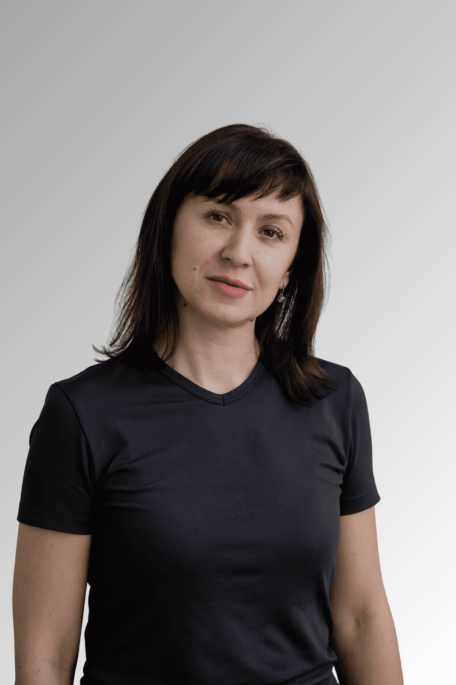
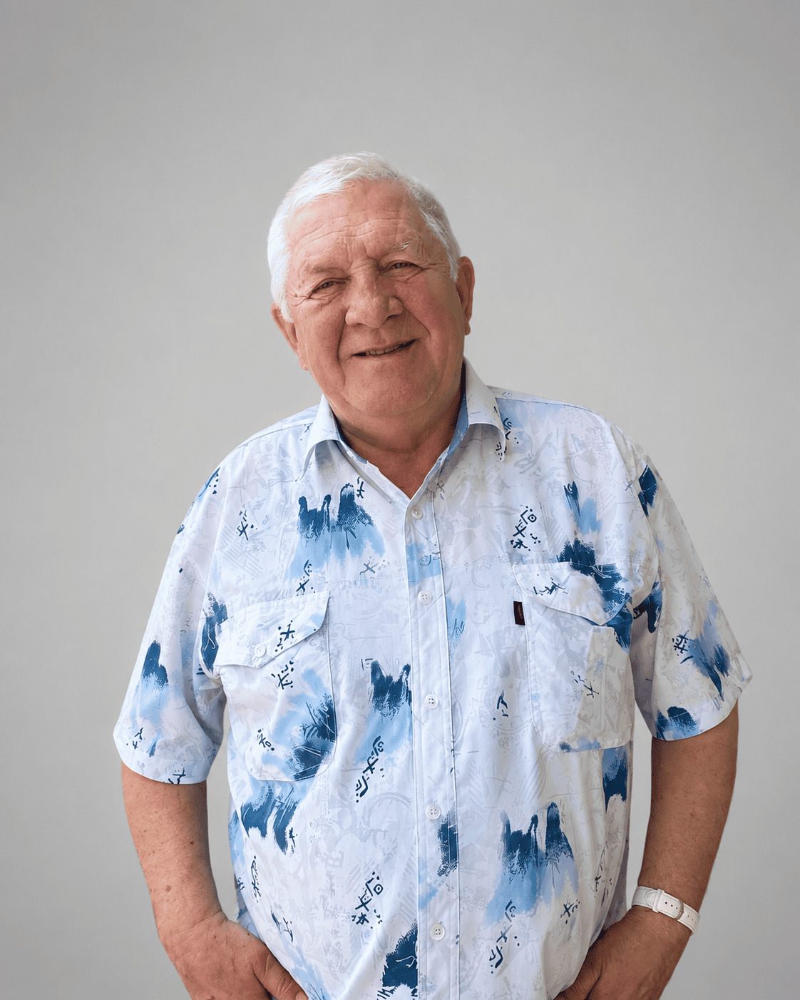
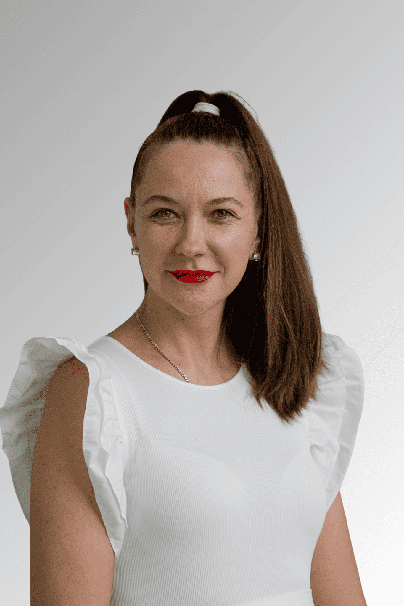
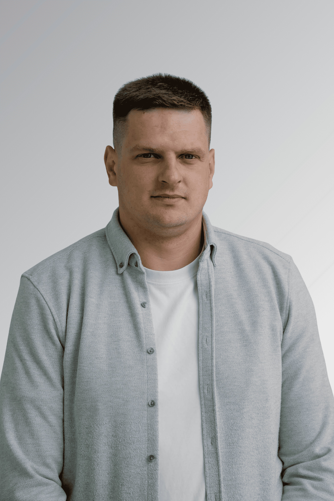
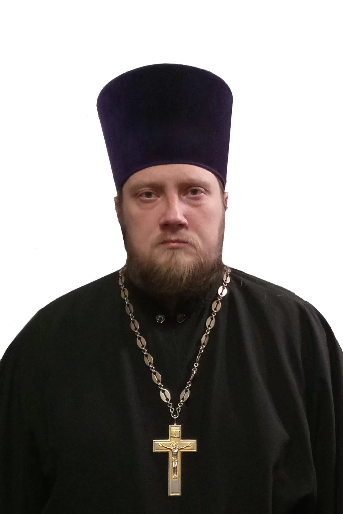

+375 29 784 18 20
|
+375 29 557 86 41
За восстановлением человека всегда стоят люди. Команда центра «Анастасис» — это специалисты с профессиональным опытом помощи при зависимости, глубоким пониманием природы проблемы и уважительным отношением к личности каждого человека.

С 2016 года работает в центре реабилитации «Анастасис Сосновка». Отвечает за организацию работы центра, развитие направления помощи и создание условий, в которых человек получает поддержку на пути восстановления.
Татьяна Сергеевна работает в учреждении «Центр реабилитации зависимых от алкоголя и наркотиков Анастасис Сосновка» с февраля 2016 года.
В качестве директора занимается организацией работы центра, развитием его направлений и координацией деятельности команды специалистов.
Задача — создавать условия, в которых профессиональные знания специалистов объединяются с внимательным отношением к человеку и его жизненной ситуации.
«За каждым человеком, который приходит в центр, стоит не только проблема зависимости, но и целая история жизни, семья и надежда на изменения».

Более 30 лет работает с зависимостью и восстановлением. Помогает человеку увидеть возможности изменений, опираясь на профессиональный опыт и понимание природы зависимости.
Небоженко Григорий Григорьевич имеет многолетний опыт работы в сфере помощи людям с зависимостями. В профессиональном подходе сочетает знания психологии, работу с личностью и внимание к жизненной ситуации человека.
Сертификат EAGT — подтверждение квалификации в области гештальт-терапии по стандартам Европейской ассоциации гештальт-терапии.
Член Белорусской психологической ассоциации. Участник профессиональных программ по работе с химической зависимостью и современным подходам помощи людям.
Член Белорусской психологической ассоциации.
Участник программы кафедры наркологии Московской медицинской академии «Современные взгляды на природу и лечение химической зависимости».
Обучение в Московском гештальт институте по направлению «Гештальт-терапия».

Помогает людям и семьям разобраться в сложных ситуациях, связанных с зависимостью и изменениями в жизни. В работе сочетает профессиональные знания, гештальт-подход и индивидуальное внимание к истории каждого человека.
9+ лет работы с зависимостями и созависимостью
Гештальт-подход
Телесно-ориентированный подход
Индивидуальные и групповые форматы
«За каждой зависимостью стоит не только проблема, но и история человека, которую важно понять».

Человек, который знает сложности зависимости не только из профессиональной практики, но и через собственный жизненный опыт. Сегодня помогает людям разобраться в особенностях зависимости, найти внутренние ресурсы для изменений и сделать первые шаги к новой жизни.
В своей работе использует принципы программы АА «12 шагов», поддерживая людей, которые проходят процесс восстановления.
Его особенность — глубокое понимание человека, столкнувшегося с зависимостью, через собственный опыт прохождения реабилитации. Это позволяет ему видеть не только внешнюю сторону проблемы, но и внутренние сложности, с которыми сталкивается человек на пути изменений.
«Человек, который прошёл сложный опыт и сегодня использует его, чтобы быть полезным другим».

Духовное сопровождение является важной частью подхода центра. Виталий Игоревич помогает человеку посмотреть на вопросы восстановления через призму веры, внутреннего изменения и поиска духовных ориентиров.
Духовное сопровождение является важной частью подхода центра. Виталий Игоревич помогает человеку посмотреть на вопросы восстановления через призму веры, внутреннего изменения и поиска духовных ориентиров.
Несёт священническое служение с 2012 года. Окончил Минскую духовную семинарию в 2013 году
Является настоятелем храма Святителя Николая Чудотворца в деревне Новые Девятковичи и обслуживает приход в деревне Мизгири. Также является духовником центра реабилитации зависимых от алкоголя и наркотиков «Анастасис Сосновка».
Свяжитесь с нами, чтобы узнать больше о возможностях центра.